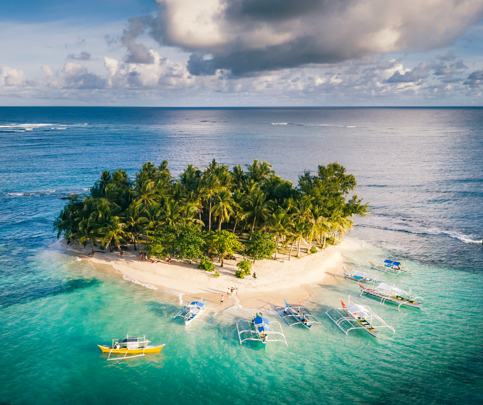

Siargao
- Best place for surfing
- Despite being petite, the island is being visited
- Consists of beautiful beaches, with white sands and blue waters.

Apo Island
- Known for its beautiful coral reefs and marine life
- Consists of 450 coral species and 650 fishes
- The known activities to do here is scuba diving, deep - sea swimming, and snorkelling.

Batan Island
- This island consists of various objcts left from WWII.
- Even though the island is deemed little, the beach is broad.
- The most famous things to do here is snorkelling and scuba diving